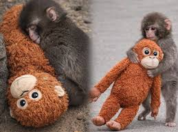

At a zoo outside Tokyo, the monkey enclosure has become a must-see attraction thanks to an inseparable pair: Punch, a baby Japanese macaque, and his stuffed orangutan companion.
Punch's mother abandoned the macaque when he was born seven months ago at the Ichikawa City Zoo and when an onlooker noticed and alerted zookeepers, they swung into action.
Japanese baby macaques typically cling to their mothers to build muscle strength and for a sense of security, so Punch needed a swift intervention, zookeeper Kosuke Shikano said.